136
UNIDADE 5 - CAPÍTULO 1
Unidade 5 - Introdução à álgebra
137
UNIDADE 5 - CAPÍTULO 1
Segundo recomendação da Organização Mundial de Saúde, deve-se utilizar o IMC (Índice de Massa Corporal) para indicar possíveis problemas de baixo peso (subnutrição) ou excesso de peso (obesidade).
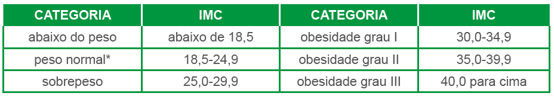São muitas as causas da obesidade. O excesso de peso pode ser genético, causado por maus hábitos alimentares ou ainda por disfunções endócrinas. Para prevenir a obesidade há necessidade da conscientização da importância da prática de esportes e de uma alimentação adequada. O estilo de vida, as refeições com poucos vegetais e frutas, além do excesso de alimentos ricos em gordura e açúcar são os grandes vilões para o aumento do número de pessoas obesas, em todas as faixas etárias.
CONVERSE
1. A sua alimentação pode ser considerada saudável? Em sua opinião, o que é necessário para se ter uma alimentação saudável?
2. O Índice de Massa Corporal (IMC) é reconhecido como o padrão
internacional para avaliar o grau de obesidade. Podemos calcular o
IMC pela expressão P/h², em que p representa peso (massa), em kg, e h
a medida da altura, em m. Uma pessoa que está com 68 kg e tem
1,70 m apresenta um peso saudável?
138
UNIDADE 5 - CAPÍTULO 1
Capítulo 1 - Expressões algébricas
Reinaldo Rosa/Acervo da Editora
Durante milhares de anos, reis, rainhas e generais dependeram de comunicações eficientes de modo a governar seus países e comandar seus exércitos. Ao mesmo tempo, todos estavam cientes das consequências de suas mensagens caírem em mãos erradas, revelando segredos preciosos a nações rivais ou divulgando informações vitais para forças inimigas. Foi a ameaça da interceptação pelo inimigo que motivou o desenvolvimento de códigos e cifras, técnicas para mascarar uma mensagem de modo que só o destinatário possa ler seu conteúdo.
Esta busca pelo segredo levou as nações a criarem departamentos para a elaboração de códigos, responsáveis por garantirem a segurança das comunicações, inventando e utilizando os melhores códigos possíveis. Ao mesmo tempo, os decifradores de códigos inimigos tentam quebrar esses códigos, para roubar seus segredos. [...]
[...] Um código envolve a substituição de uma palavra ou frase por uma palavra, um número ou um símbolo. [...] Uma alternativa ao código é a cifra, uma técnica que age num nível mais fundamental, onde as letras, no lugar das palavras, são substituídas. [...].
SINGH, Simon. O livro dos códigos. Rio de Janeiro: Record, 2007. p. 11-14.
139
UNIDADE 5 - CAPÍTULO 1
Observando o texto, percebe-se que os códigos e cifras sempre foram importantes para a humanidade. Hoje em dia encontramos em vários casos: na comunicação entre navios (código Morse); códigos na informática; dentre outras situações.
Para codificarmos ou decodificarmos uma mensagem necessitamos de informações confidenciais denominadas: chave.
Como exemplo, vamos considerar o círculo abaixo como chave, onde cada letra é associada a um número, desconsiderando os acentos e os espaços.
Observe:
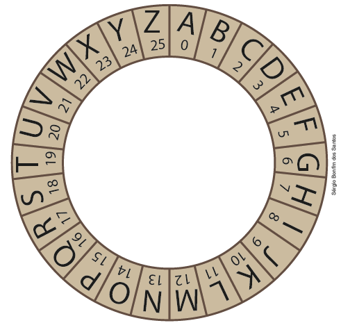1. Agora é com você! Troque ideias com seu colega e, baseando-se na chave acima, decodifiquem a mensagem a seguir.

Na situação apresentada, você realizou substituições de números por letras para decifrar uma mensagem.
É possível também substituir letras por números para realizar um cálculo e descobrir um valor numérico que seja importante, ou ainda, utilizar as letras para generalizar determinadas situações. Neste caso, estaremos usando a Álgebra para solucionar problemas.
Vejamos a seguir uma situação em que utilizaremos letras, números e sinais para representar o perímetro de figuras geométricas.
140
UNIDADE 5 - CAPÍTULO 1
As figuras representadas abaixo mostram uma sequência de quadrados, com suas respectivas medidas dos lados.
1. Troque ideias com seu colega e respondam às questões a seguir no caderno.
a) Determinem o perímetro de cada uma das figuras apresentadas.
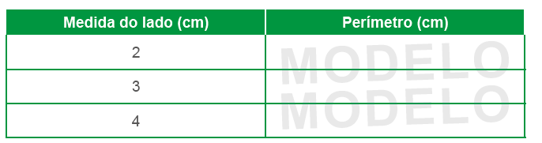b) Seguindo este mesmo padrão, qual seria a medida do lado e o perímetro do próximo quadrado?
c) Representando a medida do lado do quadrado pela letra l, podemos obter uma expressão algébrica que nos forneça o perímetro de qualquer quadrado, de acordo com a medida do seu lado. Escrevam no caderno esta expressão.
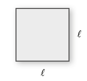As expressões algébricas são formadas por números (coeficientes) e letras (variáveis ou parte literal).
Na expressão que representa um número multiplicado por 16, temos:
coeficiente ⟶ 16y ⟵ parte literal
141
UNIDADE 5 - CAPÍTULO 1
Simplificando expressões algébricas
No retângulo abaixo, representamos por x e y as medidas dos lados.
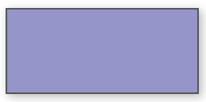Para calcularmos o perímetro desse retângulo, adicionamos as medidas dos seus lados: x + x + y + y.
Mas, é possível simplificar esta expressão utilizando a multiplicação: 2 ∙ x + 2 ∙ y ou 2x + 2y.
Em uma expressão algébrica, os termos que apresentam a mesma parte literal podem ser agrupados.
Observe:
2x + 3x = x + x + x + x + x = 5x
Exemplos:
► 3x + 4 + x = 4x + 4
► 3x + 5(x + 1)
Aplicando a propriedade distributiva, temos:
3x + 5(x + 1) = 3x + 5x + 5 = 8x + 5
Valor numérico de uma expressão algébrica
Vejamos o valor numérico de uma expressão algébrica, relacionando o comprimento de um pêndulo (em centímetros) com o tempo de oscilação completa (em segundos).
|
Tempo de oscilação (s) |
1 |
2 |
3 |
4 |
5 |
... |
t |
|
Comprimento do pêndulo (cm) |
1 |
4 |
9 |
16 |
25 |
... |
t2 |
A expressão algébrica que indica o comprimento do pêndulo é dada por t2, em que t representa o tempo de oscilação.
Para calcular o comprimento de um pêndulo que oscila por 7 segundos, basta substituir t por 7 na expressão algébrica t2.
Para t = 7, temos:
t2 = 72 = 49
Portanto, 49 é o valor numérico da expressão t2 quando t = 7.
Para obter o valor numérico de uma expressão algébrica, substituímos as variáveis dessa expressão por números e efetuamos as operações indicadas.
142
UNIDADE 5 - CAPÍTULO 1
Encontre soluções
1. Sendo x um número desconhecido, escreva em seu caderno a expressão algébrica que represente:
a) o quádruplo desse número;
b) esse número menos 15;
c) o dobro desse número mais 8;
d) o antecessor desse número;
e) o sucessor desse número;
f) o triplo do sucessor desse número;
g) o antecessor do dobro desse número;
h) três quintos desse número;
i) a diferença entre o triplo desse número e 45;
j) a soma do quádruplo desse número e sua metade.
2. No caderno, escreva a expressão algébrica que represente cada uma das situações a seguir.
a) Uma pessoa tem 5 anos. Qual será a idade dela daqui a y anos?
b) A diferença entre o salário de Marcos e Roberto é de R$ 200,00. Representando o valor do salário de Marcos por x e sabendo que ele ganha mais do que Roberto, qual é o salário de Roberto?
c) Em um acampamento de férias, há 36 crianças, sendo x o número de meninas. Qual é o número de meninos?
3. A idade de Gabriel é igual a 2/5 da idade de Márcia. No caderno, escreva uma expressão algébrica que represente a idade de Gabriel, usando x para representar a idade de Márcia.
4. Lucas tem y bolinhas de gude e seu amigo o triplo mais 12 bolinhas. Represente a expressão algébrica que indica a quantidade de bolinhas de gude que o amigo de Lucas tem.
5. A distância entre as cidades A e B é de x quilômetros. Sabendo que a distância entre as cidades A e C é a metade da distância entre A e B mais 7 quilômetros, represente a distância entre as cidades A e C no caderno.
6. Uma camiseta custou 5 reais a mais que uma bermuda. No caderno, represente algebricamente o custo total de 3 camisetas e 2 bermudas.
7. Em uma chácara, há galinhas e cachorros. Existem 8 galinhas a mais que a quantidade total de cachorros. Em seu caderno, escreva uma expressão algébrica que represente a quantidade total de animais existentes nessa chácara.
8. A soma de dois números é igual a 45. Se o maior número é representado por b, como podemos representar o menor número?
9. Em seu caderno, simplifique as expressões algébricas abaixo.
a) 15x + x - 2x
b) - 23y - 5y + 10y
c) - a + 9a - 3a
d) 9x + 3 + 7 + 8x
e) 12y - 30x + 6y - 2x
f) 2 (a - 3) + 13
g) 4 (x + 1) - 6(x - 2)
h) 0,5 (2x + 4) + 9x
143
UNIDADE 5 - CAPÍTULO 1
10.
Podemos calcular a área de um trapézio pela expressão (B +
b).h/2.
Calcule a área da figura, sabendo que B = 5 cm, b = 2 cm e h = 3 cm.
11. Em seu caderno, resolva as seguintes situações:
a) Marcelo pretende comprar 3 canetas e 2 lápis para sua irmã. Sendo x o preço de cada caneta e y o preço de cada lápis, escreva uma expressão algébrica que represente o valor total a ser pago.
b) Na papelaria A, cada caneta custa R$ 3,00 e cada lápis, R$ 2,50. Na papelaria B, cada caneta custa
R$ 2,00 e cada lápis, R$ 3,50. Em qual
papelaria Marcelo gastará menos?
12. Em seu caderno, calcule o valor numérico das seguintes expressões algébricas:
a) x² - x + 3, para x = 3;
b) x³ + 6x - 2, para x = 2;
c) a b c/2, para a = 5, b = -2 e c = - 1;
d) x³ - y²/x-y, para x = - 2 e y = - 4;
e) x² + 1/3 , para x = 1/2;
f) a+b/1-ab , para a = 1/2 e b = 1/5 .
13. Considere o retângulo abaixo.
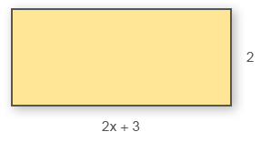a) Em seu caderno, escreva a expressão algébrica que representa o perímetro.
b) Agora, escreva a expressão algébrica que representa a área.
c) Se x = 3,5 cm, qual é o perímetro?
d) Se x = 1,6 cm, qual é a área?
14. Uma pessoa calçar sapatos de número 36 não significa que os pés medem 36 cm. Existe uma fórmula algébrica que nos permite determinar o tamanho dos sapatos de acordo com o comprimento dos pés.
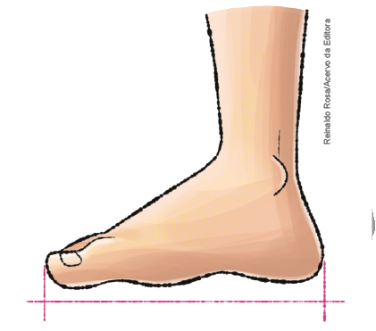Número dos sapatos = 5p + 28 /4
Em que p é a medida do comprimento dos pés, em centímetros.
Vale ressaltar que o resultado obtido com esse cálculo nem sempre é exato, mas é bem próximo da medida real.
Qual é o número dos sapatos de uma pessoa cujos pés têm 24 cm de comprimento?
144
UNIDADE 5 - CAPÍTULO 1
15. Em seu caderno, expresse o perímetro dos polígonos da maneira mais simples possível.
a)
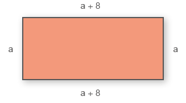b)
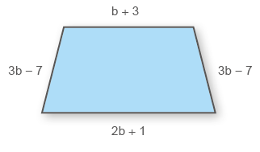c)
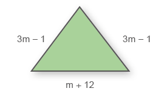d)
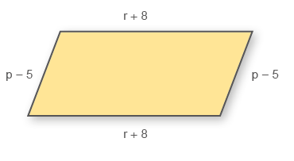16. Pense em um número, multiplique-o por 6, adicione o resultado a 12 e divida tudo por 3.
a) Se Juliana pensar no número 6, qual resultado ela encontrará?
b) Bruno pensou no número 1/2. Que valor ele encontrou como resultado?
c) Se o número pensado for -5, o resultado encontrado será positivo ou negativo?
17. A seguir, temos representados os números figurados, que são chamados assim porque expressam a quantidade de pontos em certas configurações geométricas. Copie o quadro em seu caderno e complete-o com a quantidade de pontos necessários para representar as figuras geométricas em cada posição.
Números triangulares
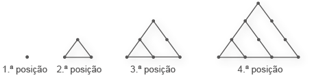Números quadrados

Números pentagonais

Números hexagonais

|
Quantidade de pontos |
|||||
|
Posição |
1.ª |
2.ª |
3.ª |
4.ª |
5.ª |
|
Números |
|||||
|
Números |
|||||
|
Números |
|||||
|
Números |
|||||